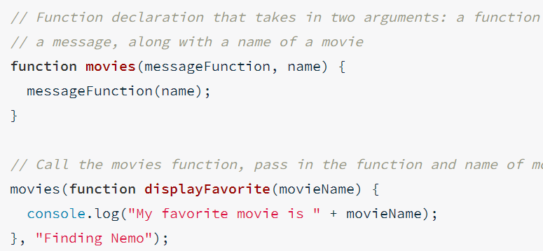

To avoid repeating the same code several times, it best to use a loop. Loops will continuously iterate around a piece of code. Loops can be nested. To set up a while loop, type while (condition) {what is being looped}.
A for loop is the most common type of loop used in javascript. For loops force you to define the start , end point, and increments of a loop in the for statement. For example for (var x = 1; x < 10; x++) This set the variable and starting point, continues while x < 10, and increase x by 1 each time through the loop. Note that x++ is a different way of writting x += or x = x + 1;however, there is a difference. If you type x++, it will return the current number and change the value of x by 1. Similarly, ++x will return x + 1. It all depends on what the program needs. You can also use this when subtracting.
Function is a way of packaging up code and making it more simple use, without the need to consistantly copy and paste long code. A function normally takes in arguments, and return the result of affecting the argument in a certain way. The variable are known as parameters, the actual value of those variables are known as arguments. Return statements are used to make the function return a value. Once defined, you can call a function when you want to use it.
You may noticed that when you used console.log() it return whatever is in the () followed by undefined. Undefined is what is being return by the console.log() function. More specifically undefined is the result of a function not having any specified value for it to return. This is because a function must always return something. Another way to print messages is to use the word return. Returns are used to stop the execution of a function and return a value back to the caller. Console.log can print text but it is not a return statement. If a return statement is present, console.log will not return undefined.
Scope will be at the heart of many programming problem. Scope is the part of a program where a particular identifier(variable or function name) is visible or accessible. In javascript there are two different type of scope, global scope and function scope. If you have an identifier outside of any function, it can be accessed anywhere in the code after it is defined, this is known as global scope. If you have a identifer inside a function, that identifier can be accessed only inside the function and any other nested function. This is known as function scope. Variables in function scope only affect the value inside that scope, if x = 1 and in a function you multiply x by 3; outside that function, x is still 1.
Hoisting is a unique feature to javascript that allows all function and variables to be declared before the code even runs in the current scope. This makes it so a function can be used before it is written. In the case of variables, it is actually a bad thing to use hoisting, due to the fact that the variable is defined, but the assignment with that variable isn't hoisted with the variable. This is why, in the case of variables, you want to define them on the top of the current scope. It is common practice to avoid using hoisting, and stick to the top-to-bottom standard way of writting code.
A function expression is a function stored in a variable. A function expression looks like var x = function(parameter){}. If you want to use the function expression, just type the variable name followed by the argument you want to pass(if any). Notice how the function has no name, this is known as a annonymous function. Annonymous functions can be named, but you would still have to use the variable name, not the function name. Function expression, unlike function declaration(the noraml way) are not affected by hoisting.
With function expressions, you are able to pass functions into other
functions. This is known as a callback. If you skip the
assignment, you can still perform a callback. It looks like
movies(function nameOfFunction(parameter){command;}) There is an example
below. The function below returns the string "My favorite movie is
Finding Nemo."

You might be wondering why we would want to use an anonymous inline
function. Anonymous inline function expressions are often used with
function callback that aren't going to be reused.
Arrays are a data strcture that can hold multiple data values, similar to a list. Array, like list in python, start from 0. To make an array just create a variable equal to []. var x = [] Eat element in an array needs to be seperated with a comma. Array can basically hold any value. Each item in an array is known as an element. You can refer to different items in an array using indexing. Keep in mind, if you try to access an element at an index that doesn't exist, undefined will be returned. Additionally, you can change the value of an element in the array by typing index[0] = newvalue;.
Arrays have a number of properties and methods. Properties are like special pieces of information about a data structure. The .length property is one that we have used before on strings. If used if arrays, it will return the amount of elements in a array. A method is like a special predefined function that data structures can call. Some examples are:
Objects allows us to wrap pieces of related data and functionality, and place it in a singular container. Arrays are an example of an object, but there are several more built-in to javascript, and you can even build your own.
One way to define an object is to create a variable and assign it to a set of curly braces. {}. You can confirm what type of object a variable is by using the typeof operator. Operators have property and commands. To add information, use property keys and associate it with a value. For example color: "blue". Color is the key while "blue" is the value. A function that is associated with an object( is defined inside the object) is known as a method.
primitive data types are things like strings, numbers, booleans, undefined and null. Objects are data sctrues in javascript that let you store data about a particular thing, and helps keep track of that data by using a "key".